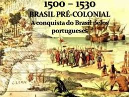

O Período Pré-Colonial corresponde à fase entre o descobrimento do Brasil, em 1500, e o início efetivo da colonização portuguesa, por volta de 1530. Durante esses 30 anos, os portugueses mantiveram uma presença superficial e esparsa nas terras recém-descobertas. A grande verdade é que, nesse primeiro momento, o Brasil não despertava tanto interesse econômico para Portugal, que estava focado nos lucros altíssimos do comércio de especiarias com o Oriente.
Logo após a chegada de Pedro Álvares Cabral, em 22 de abril de 1500, o território foi considerado oficialmente como
posse da Coroa Portuguesa. No entanto, nos anos seguintes, os portugueses não fundaram cidades, nem trouxeram colonos em
grande número. Em vez disso, adotaram uma estratégia de exploração pontual dos recursos naturais, especialmente o
pau-brasil, uma árvore nativa que produzia uma tinta vermelha muito valorizada na Europa.

🌳 A exploração do pau-brasil e o escambo
A principal atividade econômica desse período foi a extração do pau-brasil. Para isso, os portugueses contavam com o
auxílio dos povos indígenas, que realizavam grande parte do trabalho de corte e transporte da madeira. Em troca,
recebiam objetos simples como espelhos, machados, tecidos e colares. Essa forma de comércio, feita sem o uso de
dinheiro, ficou conhecida como escambo.
Não havia, nesse momento, grandes plantações, nem cidades ou estruturas administrativas. As chamadas feitorias eram
construções simples e temporárias, feitas à beira-mar, onde os portugueses guardavam o pau-brasil até os navios levarem
a madeira para a Europa. Essa lógica de “usar e sair” mostra que, durante o Período Pré-Colonial, o Brasil era visto
mais como uma fonte de matéria-prima do que como um território com potencial para ocupação e desenvolvimento.
⚔️ Ameaça estrangeira e mudança de postura
A aparente falta de interesse dos portugueses em colonizar o Brasil abriu espaço para que outros países europeus, como a
França, começassem a explorar a costa brasileira. Os franceses, por exemplo, também passaram a extrair pau-brasil de
forma clandestina e tentavam fazer alianças com os povos indígenas locais. Isso gerou preocupação em Portugal, que
percebia que sua posse sobre o território estava ameaçada.
Diante dessa situação, a Coroa Portuguesa resolveu agir. Em 1530, o rei Dom João III enviou uma expedição colonizadora
liderada por Martim Afonso de Sousa, com o objetivo de fundar vilas, organizar a produção agrícola e, sobretudo,
garantir a posse efetiva da terra frente à ameaça estrangeira. Esse evento marca o fim do Período Pré-Colonial e o
início do Período Colonial, com a implantação do sistema de capitanias hereditárias e a fundação dos primeiros núcleos
de colonização.
Características do Período Pré-Colonial
Duração: de 1500 a 1530
Presença portuguesa: limitada e desorganizada
Atividade principal: extração do pau-brasil
Relação com os indígenas: baseada no escambo e em conflitos pontuais
Estrutura administrativa: inexistente; uso de feitorias
Ameaças externas: presença de franceses e outros europeus
Fim do período: expedição colonizadora de Martim Afonso de Sousa (1530)
Conclusão
O Período Pré-Colonial é frequentemente visto como uma fase “parada” da história do Brasil, mas ele foi essencial
para o desenvolvimento posterior do país. Foi nesse momento que os portugueses começaram a entender o valor
estratégico e econômico da nova terra. A exploração do pau-brasil, a relação inicial com os povos indígenas e a
presença de estrangeiros moldaram os primeiros contatos entre os europeus e o Brasil. A partir de 1530, o cenário
mudaria completamente, com a chegada da colonização organizada e a implantação de um modelo econômico baseado no
agronegócio e na escravidão, que marcaria profundamente a história brasileira.